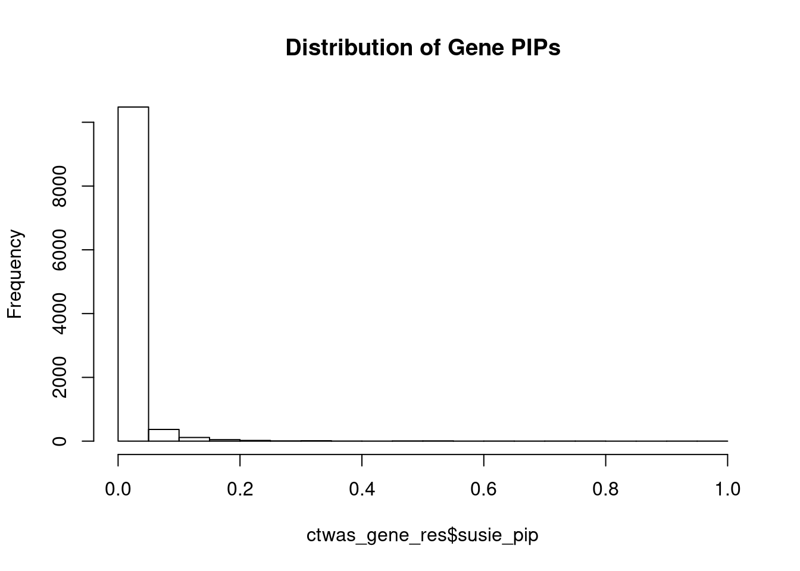
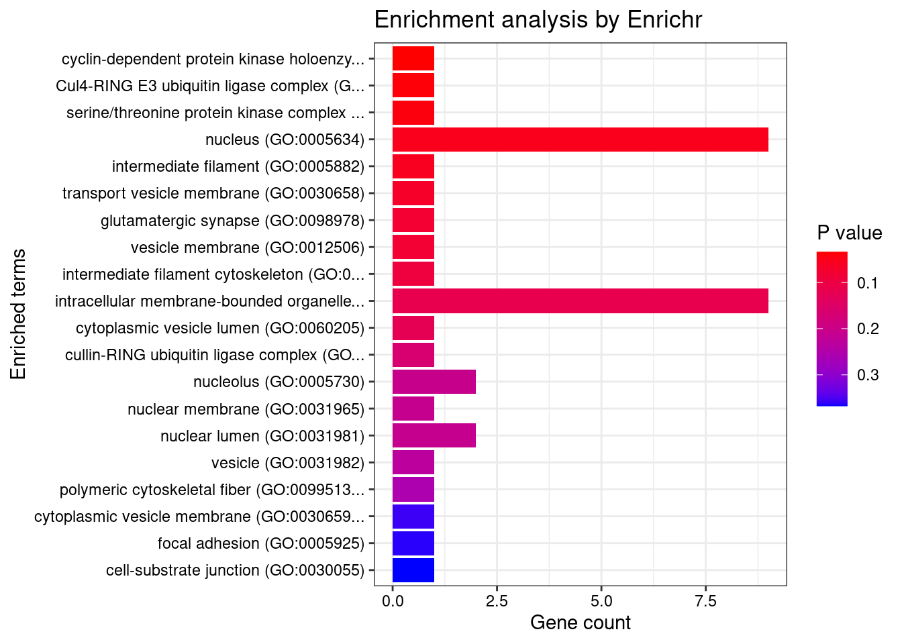
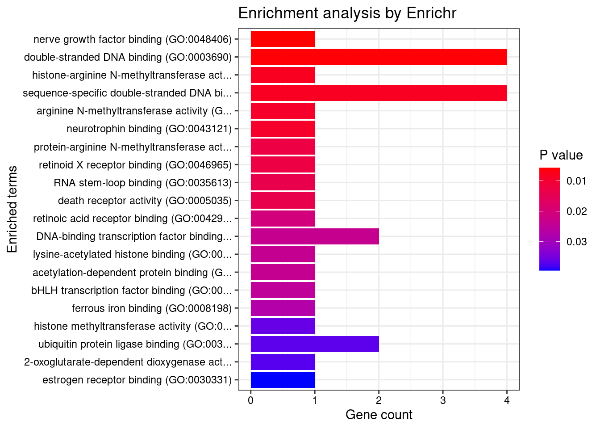
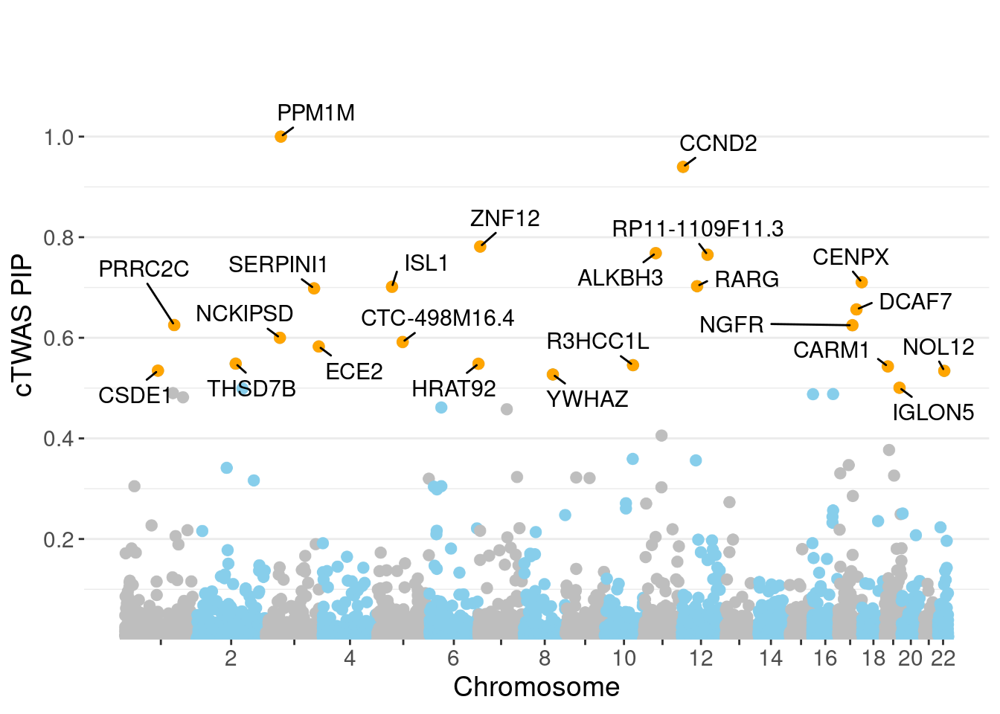

BMI - Brain Hypothalamus
sheng Qian
2021-2-6
Last updated: 2022-02-21
Checks: 6 1
Knit directory: cTWAS_analysis/
This reproducible R Markdown analysis was created with workflowr (version 1.6.2). The Checks tab describes the reproducibility checks that were applied when the results were created. The Past versions tab lists the development history.
Great! Since the R Markdown file has been committed to the Git repository, you know the exact version of the code that produced these results.
Great job! The global environment was empty. Objects defined in the global environment can affect the analysis in your R Markdown file in unknown ways. For reproduciblity it’s best to always run the code in an empty environment.
The command set.seed(20211220) was run prior to running the code in the R Markdown file. Setting a seed ensures that any results that rely on randomness, e.g. subsampling or permutations, are reproducible.
Great job! Recording the operating system, R version, and package versions is critical for reproducibility.
Nice! There were no cached chunks for this analysis, so you can be confident that you successfully produced the results during this run.
Using absolute paths to the files within your workflowr project makes it difficult for you and others to run your code on a different machine. Change the absolute path(s) below to the suggested relative path(s) to make your code more reproducible.
| absolute | relative |
|---|---|
| /project2/xinhe/shengqian/cTWAS/cTWAS_analysis/data/ | data |
| /project2/xinhe/shengqian/cTWAS/cTWAS_analysis/code/ctwas_config.R | code/ctwas_config.R |
Great! You are using Git for version control. Tracking code development and connecting the code version to the results is critical for reproducibility.
The results in this page were generated with repository version bbf6737. See the Past versions tab to see a history of the changes made to the R Markdown and HTML files.
Note that you need to be careful to ensure that all relevant files for the analysis have been committed to Git prior to generating the results (you can use wflow_publish or wflow_git_commit). workflowr only checks the R Markdown file, but you know if there are other scripts or data files that it depends on. Below is the status of the Git repository when the results were generated:
Ignored files:
Ignored: .ipynb_checkpoints/
Untracked files:
Untracked: Rplot.png
Untracked: analysis/Glucose_Adipose_Subcutaneous.Rmd
Untracked: analysis/Glucose_Adipose_Visceral_Omentum.Rmd
Untracked: analysis/Splicing_Test.Rmd
Untracked: code/.ipynb_checkpoints/
Untracked: code/AF_out/
Untracked: code/BMI_S_out/
Untracked: code/BMI_out/
Untracked: code/Glucose_out/
Untracked: code/LDL_S_out/
Untracked: code/T2D_out/
Untracked: code/ctwas_config.R
Untracked: code/mapping.R
Untracked: code/out/
Untracked: code/run_AF_analysis.sbatch
Untracked: code/run_AF_analysis.sh
Untracked: code/run_AF_ctwas_rss_LDR.R
Untracked: code/run_BMI_analysis.sbatch
Untracked: code/run_BMI_analysis.sh
Untracked: code/run_BMI_analysis_S.sbatch
Untracked: code/run_BMI_analysis_S.sh
Untracked: code/run_BMI_ctwas_rss_LDR.R
Untracked: code/run_BMI_ctwas_rss_LDR_S.R
Untracked: code/run_Glucose_analysis.sbatch
Untracked: code/run_Glucose_analysis.sh
Untracked: code/run_Glucose_ctwas_rss_LDR.R
Untracked: code/run_LDL_analysis_S.sbatch
Untracked: code/run_LDL_analysis_S.sh
Untracked: code/run_LDL_ctwas_rss_LDR_S.R
Untracked: code/run_T2D_analysis.sbatch
Untracked: code/run_T2D_analysis.sh
Untracked: code/run_T2D_ctwas_rss_LDR.R
Untracked: data/.ipynb_checkpoints/
Untracked: data/AF/
Untracked: data/BMI/
Untracked: data/BMI_S/
Untracked: data/Glucose/
Untracked: data/LDL_S/
Untracked: data/T2D/
Untracked: data/TEST/
Untracked: data/UKBB/
Untracked: data/UKBB_SNPs_Info.text
Untracked: data/gene_OMIM.txt
Untracked: data/gene_pip_0.8.txt
Untracked: data/mashr_Heart_Atrial_Appendage.db
Untracked: data/mashr_sqtl/
Untracked: data/summary_known_genes_annotations.xlsx
Untracked: data/untitled.txt
Note that any generated files, e.g. HTML, png, CSS, etc., are not included in this status report because it is ok for generated content to have uncommitted changes.
These are the previous versions of the repository in which changes were made to the R Markdown (analysis/BMI_Brain_Hypothalamus.Rmd) and HTML (docs/BMI_Brain_Hypothalamus.html) files. If you’ve configured a remote Git repository (see ?wflow_git_remote), click on the hyperlinks in the table below to view the files as they were in that past version.
| File | Version | Author | Date | Message |
|---|---|---|---|---|
| Rmd | bbf6737 | sq-96 | 2022-02-21 | update |
| html | 91f38fa | sq-96 | 2022-02-13 | Build site. |
| Rmd | eb13ecf | sq-96 | 2022-02-13 | update |
| html | e6bc169 | sq-96 | 2022-02-13 | Build site. |
| Rmd | 87fee8b | sq-96 | 2022-02-13 | update |
Weight QC
#number of imputed weights
nrow(qclist_all)[1] 11083#number of imputed weights by chromosome
table(qclist_all$chr)
1 2 3 4 5 6 7 8 9 10 11 12 13 14 15 16
1107 757 667 439 549 622 531 429 416 429 660 610 213 357 369 492
17 18 19 20 21 22
680 168 851 327 134 276 #number of imputed weights without missing variants
sum(qclist_all$nmiss==0)[1] 8872#proportion of imputed weights without missing variants
mean(qclist_all$nmiss==0)[1] 0.8005Check convergence of parameters
| Version | Author | Date |
|---|---|---|
| e6bc169 | sq-96 | 2022-02-13 |
#estimated group prior
estimated_group_prior <- group_prior_rec[,ncol(group_prior_rec)]
names(estimated_group_prior) <- c("gene", "snp")
estimated_group_prior["snp"] <- estimated_group_prior["snp"]*thin #adjust parameter to account for thin argument
print(estimated_group_prior) gene snp
0.0049609 0.0002983 #estimated group prior variance
estimated_group_prior_var <- group_prior_var_rec[,ncol(group_prior_var_rec)]
names(estimated_group_prior_var) <- c("gene", "snp")
print(estimated_group_prior_var) gene snp
15.52 17.76 #report sample size
print(sample_size)[1] 336107#report group size
group_size <- c(nrow(ctwas_gene_res), n_snps)
print(group_size)[1] 11083 7535010#estimated group PVE
estimated_group_pve <- estimated_group_prior_var*estimated_group_prior*group_size/sample_size #check PVE calculation
names(estimated_group_pve) <- c("gene", "snp")
print(estimated_group_pve) gene snp
0.00254 0.11874 #compare sum(PIP*mu2/sample_size) with above PVE calculation
c(sum(ctwas_gene_res$PVE),sum(ctwas_snp_res$PVE))[1] 0.01272 15.93546Genes with highest PIPs

genename region_tag susie_pip mu2 PVE z num_eqtl
7493 PPM1M 3_36 1.0000 244.75 7.282e-04 4.537 2
3276 CCND2 12_4 0.9398 28.26 7.901e-05 -5.120 1
7598 ZNF12 7_9 0.7814 26.90 6.255e-05 5.089 2
7840 ALKBH3 11_27 0.7683 28.50 6.515e-05 -5.128 2
13153 RP11-1109F11.3 12_54 0.7652 30.71 6.992e-05 6.457 1
8379 CENPX 17_46 0.7105 23.79 5.029e-05 4.111 2
8812 RARG 12_33 0.7026 25.49 5.329e-05 -4.106 1
241 ISL1 5_30 0.7014 26.16 5.458e-05 -5.010 1
7356 SERPINI1 3_103 0.6983 23.16 4.812e-05 -4.065 1
4821 DCAF7 17_38 0.6563 30.16 5.889e-05 5.437 1
3176 PRRC2C 1_84 0.6253 28.14 5.236e-05 -5.173 1
584 NGFR 17_29 0.6250 28.07 5.220e-05 -4.005 2
11412 NCKIPSD 3_34 0.6001 26.30 4.695e-05 4.491 1
13194 CTC-498M16.4 5_52 0.5917 52.95 9.321e-05 7.706 1
5798 ECE2 3_113 0.5827 28.52 4.943e-05 -5.287 1
5712 THSD7B 2_81 0.5485 27.38 4.469e-05 5.321 1
11611 HRAT92 7_1 0.5483 24.31 3.965e-05 -3.927 2
7806 R3HCC1L 10_62 0.5456 39.55 6.419e-05 7.439 1
5498 CARM1 19_9 0.5431 32.91 5.318e-05 5.016 1
155 CSDE1 1_71 0.5347 22.42 3.566e-05 -4.745 1Genes with largest effect sizes
genename region_tag susie_pip mu2 PVE z num_eqtl
7665 CCDC171 9_13 0.000e+00 50550 0.000e+00 8.034 2
8735 NEGR1 1_46 0.000e+00 43384 0.000e+00 -10.695 2
9420 STX19 3_59 0.000e+00 31106 0.000e+00 -5.060 1
7889 LEO1 15_21 4.128e-13 27970 3.435e-14 4.603 1
5271 MFAP1 15_16 0.000e+00 23765 0.000e+00 4.303 1
13397 LINC02019 3_35 1.110e-15 22551 7.449e-17 -4.468 2
5098 TMOD3 15_21 0.000e+00 22269 0.000e+00 5.412 1
4029 TMOD2 15_21 0.000e+00 21602 0.000e+00 5.232 1
1293 WDR76 15_16 0.000e+00 21487 0.000e+00 4.740 2
11601 CKMT1A 15_16 0.000e+00 21284 0.000e+00 4.130 1
2876 CISH 3_35 0.000e+00 20260 0.000e+00 -3.799 1
3017 PLCL1 2_117 0.000e+00 18664 0.000e+00 -5.642 1
1015 CCNT2 2_80 1.554e-15 18645 8.622e-17 3.686 1
2875 HEMK1 3_35 0.000e+00 17517 0.000e+00 -3.882 1
4998 TUBGCP4 15_16 0.000e+00 16916 0.000e+00 3.432 1
9416 DHFR2 3_59 0.000e+00 16605 0.000e+00 2.761 2
9414 NSUN3 3_59 0.000e+00 15678 0.000e+00 4.755 1
8261 ADAL 15_16 0.000e+00 14821 0.000e+00 -2.861 1
125 CACNA2D2 3_35 0.000e+00 14199 0.000e+00 -4.009 1
5136 CNOT6L 4_52 0.000e+00 14095 0.000e+00 3.422 1Genes with highest PVE
genename region_tag susie_pip mu2 PVE z num_eqtl
7493 PPM1M 3_36 1.00000 244.75 7.282e-04 4.537 2
2953 LANCL1 2_124 0.04150 4670.09 5.767e-04 -3.714 2
9392 FAM220A 7_8 0.21634 445.76 2.869e-04 -1.293 1
13194 CTC-498M16.4 5_52 0.59167 52.95 9.321e-05 7.706 1
4791 RAC1 7_8 0.15841 178.70 8.423e-05 -5.512 4
2896 SPCS1 3_36 0.08081 348.59 8.382e-05 -5.067 1
3276 CCND2 12_4 0.93978 28.26 7.901e-05 -5.120 1
13153 RP11-1109F11.3 12_54 0.76517 30.71 6.992e-05 6.457 1
12160 ATP5J2 7_62 0.45796 50.81 6.923e-05 -7.117 1
2926 ITGB6 2_96 0.49914 45.97 6.827e-05 5.451 1
7840 ALKBH3 11_27 0.76831 28.50 6.515e-05 -5.128 2
7806 R3HCC1L 10_62 0.54556 39.55 6.419e-05 7.439 1
7598 ZNF12 7_9 0.78142 26.90 6.255e-05 5.089 2
13639 DHRS11 17_22 0.34692 60.57 6.252e-05 -8.142 1
4821 DCAF7 17_38 0.65634 30.16 5.889e-05 5.437 1
241 ISL1 5_30 0.70137 26.16 5.458e-05 -5.010 1
8812 RARG 12_33 0.70263 25.49 5.329e-05 -4.106 1
5498 CARM1 19_9 0.54308 32.91 5.318e-05 5.016 1
3176 PRRC2C 1_84 0.62529 28.14 5.236e-05 -5.173 1
584 NGFR 17_29 0.62496 28.07 5.220e-05 -4.005 2Genes with largest z scores
genename region_tag susie_pip mu2 PVE z num_eqtl
7489 MST1R 3_35 1.814e-03 1050.67 5.671e-06 -12.628 2
38 RBM6 3_35 3.575e-04 906.71 9.645e-07 12.536 1
9046 KCTD13 16_24 4.543e-02 109.28 1.477e-05 -11.491 1
9045 ASPHD1 16_24 9.053e-03 101.21 2.726e-06 -11.337 2
7484 RNF123 3_35 4.941e-12 823.16 1.210e-14 -10.959 1
6178 TAOK2 16_24 1.619e-02 92.70 4.466e-06 10.738 1
8735 NEGR1 1_46 0.000e+00 43383.72 0.000e+00 -10.695 2
11930 NPIPB7 16_23 5.217e-02 86.01 1.335e-05 10.453 1
10430 CLN3 16_23 5.217e-02 86.01 1.335e-05 10.453 1
8365 INO80E 16_24 1.515e-02 78.23 3.526e-06 10.102 2
8032 ZNF646 16_24 5.108e-02 75.84 1.153e-05 -10.000 1
5486 SAE1 19_33 3.541e-03 97.46 1.027e-06 9.849 1
7487 CAMKV 3_35 3.331e-16 1446.64 1.434e-18 9.848 1
2753 COL4A3BP 5_44 1.987e-02 68.99 4.078e-06 -9.828 1
458 PRSS8 16_24 1.090e-02 70.69 2.292e-06 -9.765 1
1830 KAT8 16_24 9.421e-03 68.78 1.928e-06 -9.706 1
11411 LAT 16_23 1.061e-01 83.00 2.620e-05 -9.553 1
8031 ZNF668 16_24 1.101e-02 70.05 2.295e-06 9.550 2
2458 MTCH2 11_29 7.572e-03 81.32 1.832e-06 -9.514 1
10711 SULT1A2 16_23 4.339e-02 80.36 1.038e-05 -9.449 2Comparing z scores and PIPs

[1] 0.02012 genename region_tag susie_pip mu2 PVE z num_eqtl
7489 MST1R 3_35 1.814e-03 1050.67 5.671e-06 -12.628 2
38 RBM6 3_35 3.575e-04 906.71 9.645e-07 12.536 1
9046 KCTD13 16_24 4.543e-02 109.28 1.477e-05 -11.491 1
9045 ASPHD1 16_24 9.053e-03 101.21 2.726e-06 -11.337 2
7484 RNF123 3_35 4.941e-12 823.16 1.210e-14 -10.959 1
6178 TAOK2 16_24 1.619e-02 92.70 4.466e-06 10.738 1
8735 NEGR1 1_46 0.000e+00 43383.72 0.000e+00 -10.695 2
11930 NPIPB7 16_23 5.217e-02 86.01 1.335e-05 10.453 1
10430 CLN3 16_23 5.217e-02 86.01 1.335e-05 10.453 1
8365 INO80E 16_24 1.515e-02 78.23 3.526e-06 10.102 2
8032 ZNF646 16_24 5.108e-02 75.84 1.153e-05 -10.000 1
5486 SAE1 19_33 3.541e-03 97.46 1.027e-06 9.849 1
7487 CAMKV 3_35 3.331e-16 1446.64 1.434e-18 9.848 1
2753 COL4A3BP 5_44 1.987e-02 68.99 4.078e-06 -9.828 1
458 PRSS8 16_24 1.090e-02 70.69 2.292e-06 -9.765 1
1830 KAT8 16_24 9.421e-03 68.78 1.928e-06 -9.706 1
11411 LAT 16_23 1.061e-01 83.00 2.620e-05 -9.553 1
8031 ZNF668 16_24 1.101e-02 70.05 2.295e-06 9.550 2
2458 MTCH2 11_29 7.572e-03 81.32 1.832e-06 -9.514 1
10711 SULT1A2 16_23 4.339e-02 80.36 1.038e-05 -9.449 2GO enrichment analysis for genes with PIP>0.5
#number of genes for gene set enrichment
length(genes)[1] 23Uploading data to Enrichr... Done.
Querying GO_Biological_Process_2021... Done.
Querying GO_Cellular_Component_2021... Done.
Querying GO_Molecular_Function_2021... Done.
Parsing results... Done.
[1] "GO_Biological_Process_2021"
[1] Term Overlap Adjusted.P.value Genes
<0 rows> (or 0-length row.names)
[1] "GO_Cellular_Component_2021"
[1] Term Overlap Adjusted.P.value Genes
<0 rows> (or 0-length row.names)
[1] "GO_Molecular_Function_2021"
[1] Term Overlap Adjusted.P.value Genes
<0 rows> (or 0-length row.names)DisGeNET enrichment analysis for genes with PIP>0.5
Description FDR
31 Neoplasm Recurrence, Local 0.03848
94 Familial encephalopathy with neuroserpin inclusion bodies 0.03848
106 MEGALENCEPHALY-POLYMICROGYRIA-POLYDACTYLY-HYDROCEPHALUS SYNDROME 3 0.03848
5 Bladder Exstrophy 0.04184
15 Communicating Hydrocephalus 0.04184
23 Congenital Hydrocephalus 0.04184
41 Congenital musculoskeletal anomalies 0.04184
48 POLYDACTYLY, POSTAXIAL 0.04184
54 Hydrocephalus Ex-Vacuo 0.04184
65 Post-Traumatic Hydrocephalus 0.04184
Ratio BgRatio
31 2/10 39/9703
94 1/10 1/9703
106 1/10 1/9703
5 1/10 2/9703
15 1/10 7/9703
23 1/10 8/9703
41 1/10 6/9703
48 1/10 4/9703
54 1/10 7/9703
65 1/10 7/9703WebGestalt enrichment analysis for genes with PIP>0.5
Loading the functional categories...
Loading the ID list...
Loading the reference list...
Performing the enrichment analysis...Warning in oraEnrichment(interestGeneList, referenceGeneList, geneSet, minNum =
minNum, : No significant gene set is identified based on FDR 0.05!NULLPIP Manhattan Plot

Sensitivity, specificity and precision for silver standard genes
#number of genes in known annotations
print(length(known_annotations))[1] 41#number of genes in known annotations with imputed expression
print(sum(known_annotations %in% ctwas_gene_res$genename))[1] 22#significance threshold for TWAS
print(sig_thresh)[1] 4.586#number of ctwas genes
length(ctwas_genes)[1] 2#number of TWAS genes
length(twas_genes)[1] 223#show novel genes (ctwas genes with not in TWAS genes)
ctwas_gene_res[ctwas_gene_res$genename %in% novel_genes,report_cols] genename region_tag susie_pip mu2 PVE z num_eqtl
7493 PPM1M 3_36 1 244.8 0.0007282 4.537 2#sensitivity / recall
print(sensitivity) ctwas TWAS
0.00000 0.07317 #specificity
print(specificity) ctwas TWAS
0.9998 0.9801 #precision / PPV
print(precision) ctwas TWAS
0.00000 0.01345 
sessionInfo()R version 3.6.1 (2019-07-05)
Platform: x86_64-pc-linux-gnu (64-bit)
Running under: Scientific Linux 7.4 (Nitrogen)
Matrix products: default
BLAS/LAPACK: /software/openblas-0.2.19-el7-x86_64/lib/libopenblas_haswellp-r0.2.19.so
locale:
[1] LC_CTYPE=en_US.UTF-8 LC_NUMERIC=C
[3] LC_TIME=en_US.UTF-8 LC_COLLATE=en_US.UTF-8
[5] LC_MONETARY=en_US.UTF-8 LC_MESSAGES=en_US.UTF-8
[7] LC_PAPER=en_US.UTF-8 LC_NAME=C
[9] LC_ADDRESS=C LC_TELEPHONE=C
[11] LC_MEASUREMENT=en_US.UTF-8 LC_IDENTIFICATION=C
attached base packages:
[1] stats graphics grDevices utils datasets methods base
other attached packages:
[1] readxl_1.3.1 forcats_0.5.1 stringr_1.4.0 dplyr_1.0.7
[5] purrr_0.3.4 readr_2.1.1 tidyr_1.1.4 tidyverse_1.3.1
[9] tibble_3.1.6 WebGestaltR_0.4.4 disgenet2r_0.99.2 enrichR_3.0
[13] cowplot_1.0.0 ggplot2_3.3.5 workflowr_1.6.2
loaded via a namespace (and not attached):
[1] fs_1.5.2 lubridate_1.8.0 bit64_4.0.5 doParallel_1.0.16
[5] httr_1.4.2 rprojroot_2.0.2 tools_3.6.1 backports_1.4.1
[9] doRNG_1.8.2 utf8_1.2.2 R6_2.5.1 vipor_0.4.5
[13] DBI_1.1.1 colorspace_2.0-2 withr_2.4.3 ggrastr_1.0.1
[17] tidyselect_1.1.1 bit_4.0.4 curl_4.3.2 compiler_3.6.1
[21] git2r_0.26.1 cli_3.1.0 rvest_1.0.2 Cairo_1.5-12.2
[25] xml2_1.3.3 labeling_0.4.2 scales_1.1.1 apcluster_1.4.8
[29] digest_0.6.29 rmarkdown_2.11 svglite_1.2.2 pkgconfig_2.0.3
[33] htmltools_0.5.2 dbplyr_2.1.1 fastmap_1.1.0 highr_0.9
[37] rlang_0.4.12 rstudioapi_0.13 RSQLite_2.2.8 jquerylib_0.1.4
[41] farver_2.1.0 generics_0.1.1 jsonlite_1.7.2 vroom_1.5.7
[45] magrittr_2.0.1 Matrix_1.2-18 ggbeeswarm_0.6.0 Rcpp_1.0.7
[49] munsell_0.5.0 fansi_0.5.0 gdtools_0.1.9 lifecycle_1.0.1
[53] stringi_1.7.6 whisker_0.3-2 yaml_2.2.1 plyr_1.8.6
[57] grid_3.6.1 blob_1.2.2 ggrepel_0.9.1 parallel_3.6.1
[61] promises_1.0.1 crayon_1.4.2 lattice_0.20-38 haven_2.4.3
[65] hms_1.1.1 knitr_1.36 pillar_1.6.4 igraph_1.2.10
[69] rjson_0.2.20 rngtools_1.5.2 reshape2_1.4.4 codetools_0.2-16
[73] reprex_2.0.1 glue_1.5.1 evaluate_0.14 data.table_1.14.2
[77] modelr_0.1.8 vctrs_0.3.8 tzdb_0.2.0 httpuv_1.5.1
[81] foreach_1.5.1 cellranger_1.1.0 gtable_0.3.0 assertthat_0.2.1
[85] cachem_1.0.6 xfun_0.29 broom_0.7.10 later_0.8.0
[89] iterators_1.0.13 beeswarm_0.2.3 memoise_2.0.1 ellipsis_0.3.2